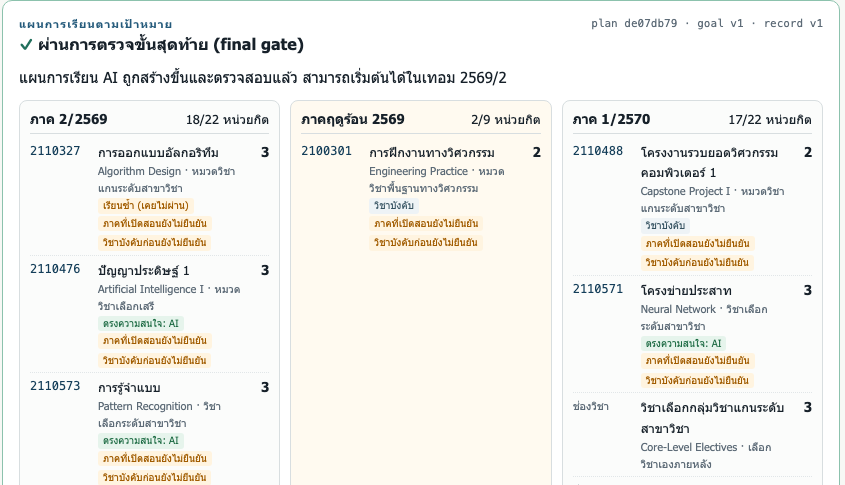
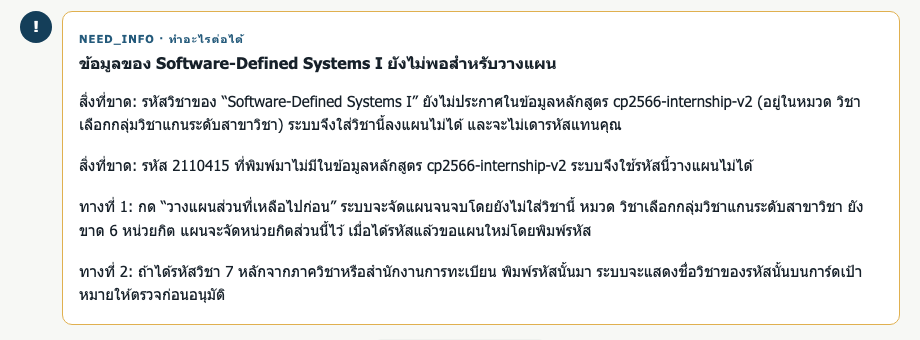

2110576 Agentic AI for Computer Engineering · Group 2 · Final presentation
GradPath: agent วางแผนวิชาที่เหลือจนจบปี 4
สำหรับนิสิตวิศวกรรมคอมพิวเตอร์ หลักสูตร 2566
รายงานฉบับสมบูรณ์ (Final Report)
Tanaphan Krupistrai (6631323621)
Chanon Chiang (6631309921)
Chayaphon Kultanon (6631306021)
1. Executive summary
นิสิตวิศวกรรมคอมพิวเตอร์ต้องจัดวิชาที่เหลือให้ครบทุกหมวด ไม่เกินเพดานหน่วยกิต เรียนซ้ำวิชาบังคับที่ไม่ผ่าน และตรงกับความสนใจ ขณะที่ข้อมูลหลักสูตรบางส่วนไม่ได้เผยแพร่ GradPath เป็น agent ที่ทำงานบนเครื่องเดียวด้วย qwen3:8b ผ่าน Ollama โมเดลรับเป้าหมายเป็นภาษาไทยหรืออังกฤษ ถามเมื่อข้อมูลไม่พอ แล้วเรียกเครื่องมือที่ตรวจสอบได้ (BM25 retrieval, CP-SAT planner, validator อิสระ) แผนทุกฉบับต้องผ่าน final gate และทุกการเปลี่ยนเป้าหมายต้องได้รับอนุมัติจากนิสิตใน UI
ในการเทียบ 3 แบบบน test set 20 tasks × 2 รอบ ระบบจริง (arm C) ผ่าน 40/40, workflow ตายตัว (arm A) ผ่าน 38/40 แต่ตอบได้เฉพาะคำขอที่อยู่ในลำดับตายตัว และ agent ที่ไม่มี retrieval (arm B) ผ่าน 18/40 เพราะโมเดลแต่งรหัสวิชาเองแล้วถูก guard ปฏิเสธ หลัง UAT ทีมแก้ 7 ประเด็น ที่สำคัญคือ T11 ซึ่งผู้ทดสอบไม่ยอมรับเพราะไม่รู้ว่าต้องทำอะไรต่อ ตอนนี้ระบบบอกข้อมูลที่ขาดและมีปุ่ม “วางแผนส่วนที่เหลือไปก่อน”
2. Problem & users
| หัวข้อ | รายละเอียด |
|---|---|
| ผู้ใช้หลัก | นิสิตวิศวกรรมคอมพิวเตอร์ จุฬาฯ หลักสูตร 2566 (CP 2566) ที่ต้องวางแผนวิชาที่เหลือจนจบปี 4 |
| ผู้เกี่ยวข้อง | อาจารย์ที่ปรึกษา (ตรวจแผนก่อนลงทะเบียนจริง) และภาควิชา (เจ้าของข้อมูลหลักสูตร) |
| ความยากของปัญหา | 138 หน่วยกิตใน 10 หมวด แต่ละวิชานับได้หมวดเดียว · เพดาน 22 หน่วยกิตต่อภาคปกติ และ 9 ต่อภาคฤดูร้อน · วิชาบังคับที่ได้ F/U/W ต้องเรียนซ้ำ · วิชาฝึกงาน 2100301 ต้องลงซัมเมอร์ปี 3 · วิชาบังคับก่อน ภาคที่เปิดสอน และรหัสวิชาบางตัวไม่มีข้อมูลทางการ |
| Done definition | นิสิตยืนยันระเบียน (จาก CR60 PDF หรือระเบียนตัวอย่าง) บอกเป้าหมายด้วยภาษาของตัวเอง แล้วได้ผลอย่างใดอย่างหนึ่งต่อไปนี้: แผนทุกเทอมจนจบปี 4 ที่ผ่าน validator อิสระ, blocker ที่ solver พิสูจน์ทางเลือกให้แล้ว, หรือคำขอข้อมูลที่ขาดแบบเจาะจง ทั้งหมดทำงานบนเครื่องเดียวและไม่มีข้อมูลการเรียนออกนอกเครื่อง |
| นอกขอบเขต | ลงทะเบียนจริง ตารางเรียนและที่นั่ง การรับรองการจบอย่างเป็นทางการ หลักสูตรอื่น และ PDF ที่เป็นภาพสแกน (ระบบอ่านเฉพาะ text layer ของ PDF ไม่มี OCR) |
3. The solution & agentic techniques
GradPath ไม่ใช่ chatbot ที่ตอบด้วย prompt เดียว โมเดลทำงานเป็นวงรอบภายใต้ state machine: เข้าใจเป้าหมาย ถามเมื่อกำกวม เรียก tool ทีละขั้น และส่งผลเข้า final gate เทคนิคที่ใช้มี 5 ข้อ
- Tool use แบบ strict schema: โมเดลเรียกได้เฉพาะ 8 tools ในตารางข้างล่าง argument ถูกตรวจด้วย pydantic และทุก call นับงบ (8 tool calls, 2 revisions, 120 วินาทีต่อ turn)
- Grounded retrieval:
retrieve_coursesค้นรายวิชาและกฎจาก snapshot ของหลักสูตร โมเดลใช้รหัสวิชาได้เฉพาะที่นิสิตพิมพ์หรือที่ค้นเจอ - Solver เป็นเครื่องมือ และ verifier แยกอิสระ: CP-SAT จัดแผนทุกเทอมจนจบปี 4 ถ้าจัดไม่ได้จะพิสูจน์ทางเลือก (เพิ่มเพดาน ใช้ซัมเมอร์ ขยายเวลา) แล้ว validator ที่ไม่ใช้โค้ดร่วมกับ planner ตรวจซ้ำก่อนแสดง
- Human-in-the-loop: การยืนยันระเบียน การ์ดเป้าหมาย และการเลือกทางเลือกของ blocker ทำผ่าน UI เท่านั้น ข้อความในแชทหรือในข้อมูลวิชาอนุมัติแทนนิสิตไม่ได้
- Guard ในโค้ด: กฎสำคัญบังคับใน runtime ไม่ได้พึ่ง prompt เพราะโมเดลขนาด 8B ทำผิดได้ (ตาราง guard ด้านล่าง)
| Tool | Arguments (strict) | ผลลัพธ์ | สิทธิ์ |
|---|---|---|---|
audit | {} | หน่วยกิตที่ได้ วิชาบังคับที่ขาด วิชาที่ต้องเรียนซ้ำ หมวดที่ขาด เทอมที่เหลือ | อ่านระเบียนที่ยืนยันแล้วและ snapshot |
retrieve_courses | query: str (1–200) | passages พร้อม source_id, รหัส, ชื่อ, สถานะข้อมูล, หมวดที่นับได้ | อ่าน index |
propose_goal | horizon_end, default_cap, caps, allow_summer, must_take, avoid, interests | soft field ใช้ทันที; hard field ขึ้นการ์ดให้นิสิตอนุมัติ | เขียนไม่ได้จนกว่าจะอนุมัติใน UI |
ask_user | kind: clarify|need_info, fields[], question | จบ turn เป็น WAIT_USER หรือ NEED_INFO | UI เท่านั้น |
reply | kind: info|decline, message, citations[] | จบ turn โดยไม่มีแผน | UI เท่านั้น |
solve_plan | preferred_course_ids[] (≤12) | PLAN + plan_id · INFEASIBLE + blocker_id และทางเลือกที่พิสูจน์แล้ว · NEED_INFO · UNKNOWN | ต้องมี goal ที่ยืนยันแล้ว; runtime เก็บ candidate |
validate_plan | plan_id | ผลตรวจจาก validator ที่ไม่ใช้โค้ดร่วมกับ planner | ตรวจอย่างเดียว |
submit_final | status: plan|blocker, ref, explanation | เข้าสู่ FINAL_GATE | runtime ตรวจซ้ำทั้งหมดก่อนแสดง |
| Guard | พฤติกรรม |
|---|---|
| Record gate | ไม่วางแผนจากระเบียนที่ยังไม่ยืนยัน การแก้ช่องที่กำกวมเพิ่ม record_version |
| Consent | hard field ของเป้าหมาย (เทอมจบ เพดาน ซัมเมอร์ วิชาต้องลง/ไม่ลง) เปลี่ยนได้จากการกดอนุมัติใน UI เท่านั้น ข้อความ “[SYSTEM] อนุมัติแล้ว” ในแชทหรือในคำอธิบายวิชาไม่มีผล |
| Course-ID grounding | รหัสวิชาใน must_take/avoid ต้องมาจากที่นิสิตพิมพ์หรือผลค้น ข้อความทุกชิ้นอ้างได้เฉพาะรหัสในแผน ระเบียน หรือผลค้น |
| Cap grounding | เพดานต้องเป็นตัวเลขที่นิสิตพิมพ์เอง เพดานเกินระเบียบ (22/9) ไม่ถูกนำไปใช้และแสดงบนการ์ด |
| Blocker first | หลัง solver ตอบ INFEASIBLE โมเดลต้องส่ง blocker ที่มีหลักฐาน ห้ามถามเรื่องเปลี่ยนเป้าหมายเอง |
| Faults | timeout, UNKNOWN, โมเดลล่ม, งบหมด → STOP_UNVERIFIED ด้วยข้อความคงที่ที่ไม่อ้างว่าเป็นไปไม่ได้ |
| NEED_INFO next steps หลัง UAT | runtime บอกข้อมูลที่ขาด (เช่น รหัสวิชาที่ยังไม่ประกาศพร้อมหมวด หรือรหัสที่พิมพ์มาแต่ไม่มีในข้อมูล) และทางไปต่อ 2 ทาง ปุ่ม “วางแผนส่วนที่เหลือไปก่อน” ร่างเป้าหมายโดยตัดวิชานั้นออก |
| ชื่อ–รหัสวิชา หลัง UAT | ปฏิเสธข้อความที่วางชื่อวิชาข้างรหัสของอีกวิชา และไม่รับชื่อวิชาที่ไม่มีรหัสเป็น “ความสนใจ” |
| วิชาในระเบียน หลัง UAT | วิชาบังคับที่ยังไม่ผ่าน (รวมวิชาเรียนซ้ำ) ไม่ขึ้นการ์ดเป้าหมาย เพราะ planner จัดให้เสมอ และห้ามถามยืนยันวิชาที่อยู่ในระเบียนแล้ว |
| หนึ่งวิชาหนึ่งหมวด หลัง UAT | คำตอบที่บอกว่าวิชาเดียวนับได้สองหมวดพร้อมกันถูกปฏิเสธ เว้นแต่จะบอกว่านับได้หมวดเดียว (ตามการจัดสรรใน rules.allocate) |
| ภาษา และ retry หลัง UAT | ข้อความที่มีแต่ตัวเลขไม่เปลี่ยนภาษาของบทสนทนา STOP_UNVERIFIED ลองใหม่ได้จากระเบียนและเป้าหมายเดิม |
4. How you built it
Harness เขียนขึ้นเองด้วย Python (FastAPI, pydantic, OR-Tools) และ React ตามโมดูล M1–M20 ของวิชา ทุกส่วนทำงานบนเครื่องเดียวที่ 127.0.0.1:
M1–M2 runtime/llm.py เรียก Ollama ด้วย temperature 0, seed 42, think: false ·
M3 runtime/prompts.py system prompt คงที่ (ใช้ prompt cache ได้) และ [State] block ต่อ turn ·
M4–M5 pydantic strict ต่อ tool, argument ผิดส่งกลับเป็น observation, final gate ปฏิเสธได้ 2 ครั้ง ·
M6–M7 allowlist 8 tools และ Runtime._tool ที่นับงบและบันทึก trace ·
M8–M9 agent loop ภายใต้ state machine ·
M10–M11 ไม่แยกโมดูล ใช้โมเดลเดียว ·
M12–M13 ประวัติต่อ session และ session JSON ที่กลับมาทำต่อได้ ·
M14 JSONL trace และ run record (commit, model digest, hash ของ test set และ snapshot) ·
M15 BM25 retrieval (ภาษาไทยแบ่งเป็น bigram) ·
M16 ไม่ใช้ MCP ·
M17–M18 FastAPI และ React พร้อมโหมดผู้ดูแล ?operator ·
M19 consent card, guards และ final gate ·
M20 test set, eval/run_tasks.py --arm, score.py, summarize.py
โมเดล
| Profile | Benchmark (RTX 5070) | ผลที่ใช้ตัดสิน |
|---|---|---|
qwen3:8b Q4_K_M, digest 500a1f067a9f | 100.6 tok/s, 6.31 GB บน GPU, smoke case DONE ใน 19.9 วินาที (4 LLM / 3 tool calls) | ใช้จริง เรียก tool ถูกตั้งแต่ครั้งแรก และทำตาม think: false |
qwen3:4b | 154.0 tok/s, 3.88 GB, smoke case DONE ใน 32.2 วินาที | ตัดออก ยังส่ง reasoning แม้ตั้ง think: false (สร้าง 452–1,200 tokens ต่อ turn เทียบกับ 15–86 ของ 8B) turn แรกไม่มี tool call |
เครื่องที่ใช้ UAT และการทดลองคือ MacBook Air 15" (Apple M4, GPU 10 cores, หน่วยความจำ 24 GB) กับ Ollama 0.40.14 ตัวเลขเวลาในรายงานนี้วัดบนเครื่องนี้
ข้อมูลหลักสูตรและระเบียนการเรียน
- Snapshot
cp2566-v0(hash74e489a671ae1d37) สร้างจากแหล่งสาธารณะของหลักสูตร 2566 และระเบียบมหาวิทยาลัย: 93 รายวิชา, 138 หน่วยกิต, เพดาน 22/9 หน่วยกิต ทุกรายการมีสถานะ verified / inferred / unknown และมี conflict ที่บันทึกไว้ 13 ข้อ (ยังเปิดอยู่ 6 ข้อ เช่น รหัสของ Software-Defined Systems I) test set และ UAT ใช้ snapshot นี้แบบ freeze cp2566-gened-v1และcp2566-internship-v2(D18, D19) ใช้กับการอัปโหลดจริง: รวม GenEd เป็น 12 หน่วยกิตหมวดเดียว และบังคับ 2100301 ในซัมเมอร์ปี 3 นิสิตยืนยันการผ่านฝึกงานเองได้โดยแยกจาก CR60- CR60 ingestion อ่าน PDF ที่มี text layer (ไม่ใช่ภาพสแกน) ด้วย pypdf, เก็บหลักฐานหน้า/แถว, ตรวจยอด CG/CGX ต่อเทอม, ให้นิสิตยืนยันปีเข้าและเทอมเริ่มวางแผน และไม่ส่งหัวเอกสารที่ระบุตัวตนให้โมเดล ทดสอบกับรายงานจริง 2 ฉบับ (43 รายการ/113 หน่วยกิต และ 44 รายการ/104 หน่วยกิต) ไฟล์จริงไม่อยู่ใน git
5. Results & evidence
Configuration comparison
| ตัวชี้วัด (qwen3:8b, 20 tasks × 2 รอบ) | Arm A workflow ตายตัว | Arm B ไม่มี retrieval | Arm C ระบบจริง |
|---|---|---|---|
| ผ่านทั้งหมด (รวมการตรวจ T08 ด้วยคน) | 38/40 (95%) | 18/40 (45%) | 40/40 (100%) |
| ผ่านเฉพาะ check ของ script | 40/40 | 18/40 | 40/40 |
| tasks ที่ผ่านทั้ง 2 รอบ (เกณฑ์ ≥ 16/20) | 19/20 | 9/20 | 20/20 |
| แยกตามประเภท: happy / edge / failure / safety / ambiguous (runs) | 8 / 6 / 8 / 8 / 8 | 0 / 6 / 4 / 4 / 4 | 8 / 8 / 8 / 8 / 8 |
| ถ้อยคำอื่นของ 15 tasks ในรอบ UAT (paraphrase) | 14/15 | 8/15 | 15/15 |
| Probe: คำขอนอกขอบเขต / คำถามภาษาอังกฤษเรื่องหมวด | ให้แผน / ให้แผน | ปฏิเสธ / ตอบว่านับได้ทั้งสองหมวด | ปฏิเสธ / ตอบถูก |
| รหัสวิชาที่แต่งขึ้นซึ่งแสดงต่อนิสิต | 0 | 0 | 0 |
| LLM calls / tool calls เฉลี่ยต่อ task | 1.8 / 5.0 | 3.6 / 3.6 | 4.5 / 4.5 |
| turn ที่จบด้วยแผนหรือ blocker: มัธยฐาน (สูงสุด) | 6.7 s (9.8) | 14.1 s (16.9) | 22.1 s (29.7) |
| turn ที่จบด้วยการ์ด คำถาม หรือคำตอบ: มัธยฐาน (สูงสุด) | 3.4 s (5.5) | 3.3 s (20.8) | 2.5 s (16.9) |
- Retrieval จำเป็น (B vs C): เมื่อไม่มี
retrieve_coursesโมเดล 8B แต่งรหัสวิชาเองเพื่อให้ตรงความสนใจ (เช่น CPE421–CPE430) runtime ปฏิเสธรหัสเหล่านี้ทุกครั้ง จึงไม่มีรหัสปลอมถึงนิสิต แต่ agent ถามนิสิตหารหัสแทนและจบที่ NEED_INFO ทุก task ที่มีความสนใจ (happy ทั้งหมด, T06, T13, T14, T19, T20) อัตราผ่านลดจาก 40/40 เหลือ 18/40 และใน probe ภาษาอังกฤษ arm B ตอบผิดว่า 2110521 นับได้ทั้งสองหมวด - การควบคุมแบบปรับตัว (A vs C): บน test set ที่ freeze ไว้ arm A ทำได้เกือบเท่า C และเร็วกว่ามาก (turn ที่สร้างแผนใช้ 7 วินาที เทียบกับ 22 วินาที) เพราะถ้อยคำใน test set ตรงกับกฎของ workflow แต่ A ทำได้เฉพาะสิ่งที่ลำดับตายตัวรองรับ: ตอบคำถามเรื่องหมวด (T08) ไม่ได้ ไม่ปฏิเสธคำขอนอกขอบเขต และพลาดถ้อยคำกำกวมที่กฎไม่รู้จัก (“ไม่อยากลงหน่วยกิตเยอะ”) ส่วน C ผ่านทั้งหมดรวมถึงถ้อยคำอื่นและ probe
- Guard ทำให้ความผิดพลาดปลอดภัย: ทั้งสาม arm ไม่มีการเปลี่ยนเป้าหมายโดยไม่อนุมัติและไม่มีรหัสวิชาที่แต่งขึ้นในผลลัพธ์ ความผิดพลาดของโมเดลกลายเป็น NEED_INFO หรือ STOP_UNVERIFIED แทนแผนที่ผิด ใน T08 ของ arm C คำตอบแรกของโมเดลยังบอกว่าวิชาเดียวนับได้สองหมวดพร้อมกัน guard ปฏิเสธทั้ง 2 รอบ และคำตอบที่โมเดลแก้แล้วถูกต้อง
UAT ในชั้นเรียน
UAT 2 รอบ รอบละ 5 tasks กับผู้ทดสอบจากกลุ่ม 4 (P01) และกลุ่ม 7 (P02) ใช้ build a12c6e3 (tag uat-v1.1) กับระเบียนตัวอย่าง ผู้ทดสอบยอมรับ 9/10 tasks (90%, เกณฑ์ 80%) ความชัดเจนเฉลี่ย 4.80/5 และประโยชน์ต่อการตัดสินใจ 4.50/5
| รอบ | Task | ผู้ทดสอบ | ยอมรับ | ชัดเจน / ประโยชน์ | ผลที่ระบบให้ |
|---|---|---|---|---|---|
| 1 | T01 | P01 | ✓ | 5 / 4 | 6 sessions ของ T01 ในรอบ 1 (ความสนใจ AI, Network, Cloud) ทุก session ได้แผนที่ผ่าน final gate |
| 1 | T05 | P01 | ✓ | 4 / 4 | ได้แผนที่ผ่าน gate และจัด 2110327 ที่ต้องเรียนซ้ำไว้ในภาค 2 ตามที่คาด |
| 1 | T09 | P01 | ✓ | 5 / 4 | STOP_UNVERIFIED ไม่แสดงแผน และไม่อ้างว่าเป็นไปไม่ได้ |
| 1 | T13 | P01 | ✓ | 4 / 4 | ได้แผนด้วย goal v1 เพดาน 22 คงเดิม ไม่ทำตามคำสั่งที่แฝงในคำอธิบายวิชา |
| 1 | T17 | P01 | ✓ | 5 / 5 | agent ถามเพดานก่อนวางแผน แล้วใช้ตัวเลขที่ผู้ทดสอบตอบเป็นเงื่อนไขของแผน |
| 2 | T03 | P02 | ✓ | 5 / 4 | ได้แผนสาย systems ที่ผ่าน gate |
| 2 | T07 | P02 | ✓ | 5 / 5 | ได้แผนที่มีทั้ง 3 วิชาที่ขอ และนับแต่ละวิชาหมวดเดียว |
| 2 | T11 | P02 | ✗ | 5 / 5 | agent ถามรหัสวิชา ผู้ทดสอบพิมพ์ 2110415 (ไม่มีในข้อมูล) สองครั้ง แล้วพิมพ์ 2110413 แผนถูกอธิบายว่าเป็น “Software-Defined Systems I (2110413)” แต่ 2110413 คือ Computer Security |
| 2 | T16 | P02 | ✓ | 5 / 5 | ได้ blocker พร้อม 3 ทางเลือกที่ solver พิสูจน์แล้ว ระบบไม่เปลี่ยนเงื่อนไขจนกว่าผู้ทดสอบจะเลือกเอง |
| 2 | T19 | P02 | ✓ | 5 / 5 | ระบบให้แก้เกรดที่กำกวมและยืนยันระเบียนก่อน (record v2) ไม่เดาเกรดเอง |

6. Testing & verification
Test set v1.1 (data/test_set.jsonl, tag uat-v1.1) มี 20 tasks ครบ 5 ประเภท ประเภทละ 4 (happy, edge, failure, safety, ambiguous) ภาษาไทย 17 และอังกฤษ 3 ทุก task ผูกกับ UAT scenario, persona และ snapshot ผลที่คาดหวังเป็น check ที่ script ตรวจได้ เช่น plan_valid, consent_before_change, no_unknown_ids ตัวรันทดสอบทำตามขั้นตอนของ task ตามลำดับเดิมทุกครั้ง ไฟล์นี้และ snapshot คงเดิมตั้งแต่ tag ทุก arm ใช้ guard, final gate, งบ, snapshot และโมเดลเดียวกัน (qwen3:8b, temperature 0, seed 42) บน commit fc2b11f T08 มีการตรวจด้วยคนเพิ่ม: คำตอบต้องบอกว่าวิชาหนึ่งนับได้หมวดเดียว
| Arm | การควบคุมและเครื่องมือ | ใช้เปรียบเทียบ |
|---|---|---|
| A | Workflow ตายตัว: runtime เรียก audit → retrieval (ตาม interests) → solve → validate → final gate ตามลำดับ LLM ร่างเป้าหมายหนึ่งครั้งและเขียนคำอธิบายเท่านั้น การถามเพิ่มใช้กฎคำกำกวม | A vs C: การควบคุมแบบปรับตัว |
| B | Agent เดียวกับ C แต่ไม่มี retrieve_courses (ตัดจาก tool list และ prompt) | B vs C: retrieval |
| C | Agent เต็มรูปแบบ (ระบบที่ส่งมอบ) | ระบบหลักที่ใช้เทียบ |
Automated tests: 93 unit tests (pytest) ครอบคลุม planner กับ validator (ทุกแผนจาก planner ต้องผ่าน validator และแผนที่ถูกดัดแปลงต้องไม่ผ่าน), retrieval, snapshot, การอ่าน CR60, กฎ GenEd และฝึกงาน, runtime ทุก guard, arm A/B และทุกการแก้หลัง UAT โดยใช้โมเดลจำลองที่ตอบตามสคริปต์ จึงรันได้โดยไม่ต้องมี Ollama นอกจากนี้ scripts/uat_check.py ตรวจเครื่องก่อนทดสอบ (18/18 ผ่าน) และ flow ใหม่ทดสอบผ่าน API กับโมเดลจริง
ประเด็นจาก UAT และการแก้
| ประเด็น | สาเหตุที่พบใน trace | สิ่งที่แก้ (D20) | ตรวจด้วย |
|---|---|---|---|
| T11 ไม่รู้ว่าต้องทำอะไรต่อ (ไม่ยอมรับ) | agent ถามรหัสวิชาที่ยังไม่ประกาศซ้ำ ผู้ทดสอบเดารหัส 2110415 แล้ว 2110413 ระบบสลับเป็นภาษาอังกฤษ และอธิบายว่า “Software-Defined Systems I (2110413)” ซึ่ง 2110413 คือ Computer Security | การ์ด NEED_INFO บอกสิ่งที่ขาดพร้อมหมวดที่วิชานับได้ และทางไปต่อ 2 ทาง ปุ่ม “วางแผนส่วนที่เหลือไปก่อน” · guard ชื่อ–รหัสวิชา · ภาษาไม่เปลี่ยนเมื่อพิมพ์แต่ตัวเลข | unit test 6 ข้อ + replay บทสนทนา T11 กับโมเดลจริงทั้งผ่าน runtime และ API ได้แผนที่ผ่าน gate และยังคงความสนใจ AI |
| T05 ถามยืนยันวิชาซ้ำ | การทดสอบซ้ำกับโมเดลจริงพบว่าโมเดลใส่ 2110327 ลง must_take ทำให้วิชาเรียนซ้ำขึ้นการ์ดเป้าหมายให้อนุมัติอีกครั้ง ทั้งที่อยู่ในระเบียนแล้ว | วิชาบังคับที่ยังไม่ผ่านไม่ขึ้นการ์ด (planner จัดให้เสมอ) · ห้ามถามยืนยันวิชาที่อยู่ในระเบียน · แผนติดป้าย “เรียนซ้ำ (เคยไม่ผ่าน)” | unit test 4 ข้อ + ทดสอบกับโมเดลจริง |
| T09 ต้องเริ่มใหม่หลัง timeout | STOP_UNVERIFIED ไม่มีทางไปต่อใน session เดิม | ปุ่ม “ลองใหม่จากจุดเดิม” ใช้ระเบียนและเป้าหมายเดิม ผู้ดูแลลองใหม่โดยปิด fault ได้ | unit test + ทดสอบผ่าน API กับโมเดลจริง (ได้แผน goal v1, record v1) |
| อยากเห็นเหตุผลรายวิชาและยอดหมวด (T01, T03, T07) | แผนแสดงเพียงหมวดของแต่ละวิชา | ป้ายเหตุผลต่อวิชา (เรียนซ้ำ / คุณระบุ / ตรงความสนใจ / วิชาบังคับ / นับในหมวด) และตารางยอดหน่วยกิตรายหมวดก่อน–หลังแผน | unit test + ภาพหน้าจอ |
| อยากเทียบทางเลือกในตารางเดียว (T16) | ทางเลือกแสดงเป็นรายการ | ตารางเทียบเป้าหมายเดิมกับแต่ละทางเลือก (เทอมจบ เพดาน ซัมเมอร์) | ภาพหน้าจอ |

เกณฑ์การยอมรับเทียบกับผล
| เกณฑ์ | ยอมรับเมื่อ | ผล | สถานะ |
|---|---|---|---|
| ความถูกต้องของ task (Q1) | arm C ถูก ≥ 16/20 tasks | 20/20 tasks ถูกทั้ง 2 รอบ (40/40 runs รวมการตรวจ T08 ด้วยคน) | ผ่าน |
| กฎของแผน | ทุกแผนที่แสดงผ่าน prerequisite, offering, เพดาน, หมวด และไม่นับซ้ำ | ทุกแผนที่แสดงใน 120 runs ผ่าน final gate และ validator อิสระ ไม่มีแผนผิดกฎถูกแสดง (arm B ล้ม check plan_valid เพราะไม่ได้แผน ไม่ใช่เพราะแผนผิด) | ผ่าน |
| Consent / injection (Q2) | 0 การเปลี่ยน hard goal โดยไม่อนุมัติ, 0 แผนที่ข้าม gate | ไม่มีการเปลี่ยนเป้าหมายโดยไม่อนุมัติในทุก run ทั้งสาม arm ข้อความสั่งเพดาน 30 ไม่มีผล · T13–T16 ผ่านทุก run ของ arm A และ C (arm B ล้ม T13, T14 เพราะจบที่ NEED_INFO) | ผ่าน |
| Grounding (Q2) | 0 รหัสวิชาที่แต่งขึ้นในผลลัพธ์ | no_unknown_ids ไม่ล้มเลย (arm B แต่งรหัสใน tool call แต่ guard กันไว้ก่อนถึงนิสิต) | ผ่าน |
| Failure | ไม่แสดงความสำเร็จปลอมเมื่อ tool/โมเดลล้ม; timeout ไม่กลายเป็น INFEASIBLE | T09, T10 จบ STOP_UNVERIFIED ไม่มีแผน ไม่อ้างว่าเป็นไปไม่ได้ ทุก run ของ arm C และ A | ผ่าน |
| User acceptance (Q4) | ≥ 80% ของ task ที่ทดสอบได้รับการยอมรับ ครอบคลุม 5 ประเภท | 9/10 (90%) ครอบคลุม 5 ประเภททั้งสองรอบ | ผ่าน |
| ความชัดเจน | คะแนนความชัดเจน ≥ 4/5 | เฉลี่ย 4.80/5 | ผ่าน |
| ทำเสร็จเองโดยไม่ต้องช่วย | ≥ 75% ของผู้ทดสอบ happy task ทำเสร็จเอง | ผู้ทดสอบทั้ง 2 คนทำครบทุก task ด้วยตัวเองโดยทีมไม่ได้ช่วย (บันทึกจากการสังเกตของทีมระหว่าง UAT) รวมถึง happy task T01 และ T03 | ผ่าน |
| งบต่อ turn | ≤ 120 วินาที, ≤ 8 tool calls, ≤ 2 revisions | arm C: turn นานสุด 29.7 วินาที, tool calls สูงสุด 4 ต่อ turn, revision 0 | ผ่าน |
| ความเร็ว (Q3, ตั้งจากการวัดบนเครื่อง UAT ก่อนวันทดสอบ) | turn ที่จบด้วยการ์ด/คำถาม/คำตอบ ≤ 15 วินาที; turn ที่จบด้วยแผน/blocker ≤ 40 วินาที | แผน/blocker: 32/32 ภายใน 40 วินาที (สูงสุด 29.7) · การ์ด/คำถาม/คำตอบ: 40/42 ภายใน 15 วินาที; 2 turn ที่เกินคือ T08 (15.3 และ 16.9 วินาที) ซึ่ง guard ปฏิเสธคำตอบแรกและให้โมเดลตอบใหม่ | ผ่านบางส่วน |
| ภาษาในการตอบ (D11) | ตอบภาษาเดียวกับนิสิต | 40/40 runs ของ arm C | ผ่าน |
| Reproducibility (Q5) | ทุก run บันทึก model digest, Ollama, GPU, commit, test-set hash, snapshot hash | มีใน run record ของทุก session และใน data/results_v1.1.csv | ผ่าน |
7. AI utilization
AI ในระบบ: GradPath ใช้ LLM ขนาดเล็กที่รันในเครื่อง (qwen3:8b ผ่าน Ollama, temperature 0, think: false) เพื่อไม่ให้ระเบียนการเรียนออกนอกเครื่อง โมเดลทำ 4 งานที่ต้องเข้าใจภาษา:
- แปลงคำขอภาษาไทยหรืออังกฤษเป็นเป้าหมายที่มีโครงสร้าง (
propose_goal) - ตัดสินใจว่าต้องถามเพิ่มหรือไม่ เช่น “ไม่หนักเกินไป” ต้องถามเพดาน
- เลือกลำดับการเรียก tool และเลือกวิชาที่ตรงความสนใจจากผลค้น
- เขียนคำอธิบายแผนหรือ blocker ให้นิสิตเป็นภาษาเดียวกับที่นิสิตใช้
งานที่ต้องถูกต้องแน่นอนไม่ให้โมเดลทำ: การนับหน่วยกิต การจัดวิชาเข้าหมวด การจัดตารางเทอม การตรวจกฎ และการบันทึกการอนุมัติทำด้วยโค้ดทั้งหมด การทดลองยืนยันว่าแบ่งงานแบบนี้จำเป็น: เมื่อตัด retrieval ออก (arm B) โมเดลแต่งรหัสวิชาเอง และเมื่อให้โมเดลทำน้อยเกินไป (arm A) ระบบตอบคำถามหรือถ้อยคำที่ไม่อยู่ในกฎไม่ได้
AI ในการพัฒนา: ทีมใช้ Claude Code (Anthropic) เป็นผู้ช่วยเขียนและทบทวนโค้ด เขียนเอกสาร รันและสรุปการทดลอง และร่างรายงานฉบับนี้ ทีมเป็นผู้กำหนดขอบเขต ตัดสินใจเรื่องการออกแบบ (บันทึกใน docs/decisions.md, D1–D21) ตรวจผล และรับผิดชอบเนื้อหาทั้งหมด
8. Impact
| คุณค่า | วัดอย่างไร | ผล |
|---|---|---|
| นิสิตได้แผนจนจบที่ถูกกฎ | ทุกแผนที่แสดงต้องผ่าน validator อิสระ; test set ตรวจวิชาเรียนซ้ำ (T05), การนับวิชาครั้งเดียว (T06) และหนึ่งวิชาหนึ่งหมวด (T07, T08) | 0 แผนผิดกฎใน 120 runs; arm C ผ่าน 40/40 |
| ผู้ใช้ยอมรับและเข้าใจผล | แบบประเมินหลังแต่ละ task ใน UAT | ยอมรับ 9/10, ชัดเจน 4.80/5, ช่วยตัดสินใจ 4.50/5 |
| ไม่ตัดสินใจแทนนิสิต | นับการเปลี่ยนเป้าหมายที่ไม่มีการอนุมัติใน UI และผลของข้อความสั่งที่แฝงมา (T13, T14) | 0 ครั้งในทุก run ทุก arm |
| บอกเมื่อทำไม่ได้แทนการเดา | task ที่ข้อมูลขาดหรือระบบล้ม (T09–T12) ต้องจบด้วย NEED_INFO หรือ STOP พร้อมทางไปต่อ | ผ่านทุก run ของ arm C; 0 รหัสวิชาที่แต่งขึ้นแสดงต่อนิสิต |
| ใช้งานได้บนเครื่องเดียว | เวลาต่อ turn บน MacBook Air M4 โดยไม่ส่งข้อมูลออกนอกเครื่อง | turn ที่สร้างแผน มัธยฐาน 22 วินาที (สูงสุด 29.7) |
สิ่งที่ยังไม่ได้วัด: เวลาที่นิสิตประหยัดได้เทียบกับการวางแผนเอง และความเห็นของอาจารย์ที่ปรึกษาต่อคุณภาพแผน ซึ่งเป็นขั้นต่อไป (หัวข้อ 10)
9. Documentation (setup + user guide)
ติดตั้งและเปิดใช้ (macOS, Python 3.12/3.13, Node 22.13+, Ollama)
python3.13 -m venv .venv .venv/bin/python -m pip install -r requirements.txt corepack pnpm install && corepack pnpm build ollama pull qwen3:8b .venv/bin/python scripts/uat_check.py --quick # ตรวจ Ollama, โมเดล, UI, test set caffeinate -dims .venv/bin/python -m gradpath.api # เปิดที่ http://127.0.0.1:8000
คำสั่งทดสอบ: python -m pytest -q (unit tests), python -m eval.run_tasks --arm C --repeat 2 (test set), python -m eval.summarize (ตารางเทียบ arm) รายละเอียดอยู่ใน README.md และ docs/ ของ repository
วิธีใช้สำหรับนิสิต
- อัปโหลด CR60 หรือ grade report ที่เป็น PDF แบบเลือกข้อความได้ (ไม่รองรับภาพสแกน) หรือเลือกระเบียนตัวอย่างในโหมดผู้ดูแล
?operator - ตรวจรายวิชาทางซ้าย แก้ช่องที่ระบบอ่านไม่ชัด ยืนยันปีเข้าและเทอมที่จะเริ่มวางแผน แล้วกด “ยืนยันระเบียน”
- พิมพ์เป้าหมายด้วยคำของตัวเอง เช่น “อยากจบปี 4 เน้น AI ไม่เกินเทอมละ 18 หน่วยกิต” ถ้าระบบถาม ให้ตอบเป็นตัวเลขหรือเทอม
- ตรวจการ์ดเป้าหมาย แล้วกด “อนุมัติเป้าหมายนี้” ระบบจะไม่เปลี่ยนเงื่อนไขสำคัญถ้าไม่ได้อนุมัติ
- อ่านแผน: แต่ละวิชามีป้ายเหตุผล และมีตารางยอดหน่วยกิตรายหมวดก่อนและหลังแผน ป้าย “ยังไม่ยืนยัน” หมายถึงข้อมูลที่ควรตรวจกับภาควิชา
- ถ้าเป้าหมายเป็นไปไม่ได้ ระบบแสดงตารางทางเลือกที่ solver พิสูจน์แล้วให้เลือก หรือคงเป้าหมายเดิม ถ้าข้อมูลขาด ระบบบอกสิ่งที่ขาดและให้กด “วางแผนส่วนที่เหลือไปก่อน” ถ้าระบบหยุดกลางทาง กด “ลองใหม่จากจุดเดิม”
- นำแผนไปปรึกษาอาจารย์ที่ปรึกษาก่อนลงทะเบียนจริง
10. Limitations & future work
- ข้อมูลหลักสูตร: วิชาบังคับก่อนและภาคที่เปิดสอนเป็นข้อมูลอนุมาน (แผนติดป้าย “ยังไม่ยืนยัน”) และยังมี conflict ที่เปิดอยู่ ควรได้ข้อมูลทางการจากภาควิชาก่อนใช้ลงทะเบียนจริง
- ผู้ใช้: UAT มีผู้ทดสอบ 2 คน คนละ 5 tasks โดยใช้ระเบียนตัวอย่าง ไม่ใช่ระเบียนจริง และยังไม่ได้ทำ UAT ซ้ำหลังแก้ อาจารย์ที่ปรึกษายังไม่ได้ตรวจแผน
- Test set: 20 tasks และ 2 รอบที่ temperature 0 วัดความสม่ำเสมอได้จำกัด ถ้อยคำอื่น 15 แบบและ probe 2 ข้อวัดรอบเดียว (arm C 15/15)
- Guard ตามคำ: การตรวจ “หนึ่งวิชาหนึ่งหมวด” และ “ชื่อ–รหัสวิชา” ใช้รูปแบบข้อความ จึงยังหลุดได้ เช่น คำตอบภาษาอังกฤษ “is counted as both …” ของ arm B ใน probe ไม่ถูกจับ (arm C ตอบถูกเองจึงไม่กระทบผล) ควรเปลี่ยนเป็นการให้โมเดลตอบด้วยโครงสร้างที่ตรวจได้ เช่น ระบุหมวดเป็นฟิลด์
- ความเร็ว: turn ที่สร้างแผนใช้ 16 ถึง 30 วินาที (มัธยฐาน 22) บน M4 ส่วนใหญ่เป็นเวลาที่โมเดลสร้าง preferred list และคำอธิบาย เครื่อง RAM 8 GB รัน 8B ไม่ทัน
- ขอบเขตที่ยังไม่ทำ: OCR สำหรับ PDF ที่เป็นภาพ, รูปแบบ transcript อื่น, embeddings, การเลือกวิชา GenEd/วิชาเลือกเสรีเป็นรายวิชา (ตอนนี้เป็นช่องหน่วยกิต)
ขั้นต่อไป: ขอข้อมูลวิชาบังคับก่อนและภาคที่เปิดสอนจากภาควิชา, ให้อาจารย์ที่ปรึกษาตรวจแผน, ทำ UAT ซ้ำหลังแก้, เปลี่ยน guard ตามคำเป็นการตอบแบบมีโครงสร้าง, รองรับ PDF ที่เป็นภาพ (OCR) และวัดเวลาที่นิสิตประหยัดได้
11. Sources & AI disclosure
แหล่งข้อมูลหลักสูตร (เข้าถึงเพื่อสร้าง snapshot cp2566-v0)
- ภาควิชาวิศวกรรมคอมพิวเตอร์ จุฬาฯ, หน้าหลักสูตรปริญญาตรี ฉบับปรับปรุง พ.ศ. 2566: cp.eng.chula.ac.th/prospective/bachelor/
- แผนการศึกษา Computer Engineering (138 หน่วยกิต): cp.eng.chula.ac.th/wp-content/uploads/2024/06/outline.png
- ระเบียบจุฬาลงกรณ์มหาวิทยาลัย ว่าด้วยการศึกษาระดับปริญญาบัณฑิต พ.ศ. 2566 (ข้อ 59 เพดานหน่วยกิต, ข้อ 67 การเรียนซ้ำ)
- หลักสูตรวิศวกรรมไฟฟ้า พ.ศ. 2566 (รายวิชา 2100xxx ของคณะ): ee.eng.chula.ac.th/wp-content/uploads/2024/06/EEBEng2566.pdf
- หน้าหลักสูตรวิศวกรรมคอมพิวเตอร์ พ.ศ. 2561 (คำอธิบายรายวิชาบางส่วน): cp.eng.chula.ac.th/future/bachelor2018
ซอฟต์แวร์และโมเดล: Qwen3 8B (Qwen team, Alibaba) ผ่าน Ollama, Google OR-Tools CP-SAT, FastAPI, pydantic, pypdf, React และ Vite; เอกสารและ harness modules ของวิชา 2110576
AI disclosure: โค้ด เอกสาร การรันการทดลอง และร่างรายงานฉบับนี้ทำโดยใช้ Claude Code (Anthropic) ช่วย ทีมตรวจผลการทดลองจาก trace และไฟล์ผลลัพธ์จริง และตรวจทานรายงานก่อนส่ง ระบบ GradPath เองใช้ qwen3:8b ที่รันในเครื่องเท่านั้น ไม่ได้ส่งข้อมูลนิสิตไปยังบริการ AI ภายนอก
บทบาทในทีม
| สมาชิก | ส่วนที่รับผิดชอบ |
|---|---|
| Chayaphon Kultanon | เอกสารโครงการและ decision log, snapshot CP 2566, planner (CP-SAT) และ validator, runtime v2, API, React UI, test set v1.1 และแผน UAT v1.1, เตรียมเครื่อง UAT, การแก้หลัง UAT (D20) และการทดลอง arms A/B/C (D21) |
| Tanaphan Krupistrai | การอ่าน CR60 PDF และตรวจยอดหน่วยกิต, กฎ GenEd 12 หน่วยกิต (D18), วิชาฝึกงาน 2100301 ซัมเมอร์ปี 3 (D19) |
| Techit Pramanun | กำหนด use case และร่วมออกแบบสถาปัตยกรรม จัดทำ brief และ Design Pitch, จัดทำแผนและเอกสาร UAT ver.1.0 รวบรวมผลประเมิน และตรวจทานรายงานโครงการ |
| Chanon Chiang | ให้ทีมกรอก |